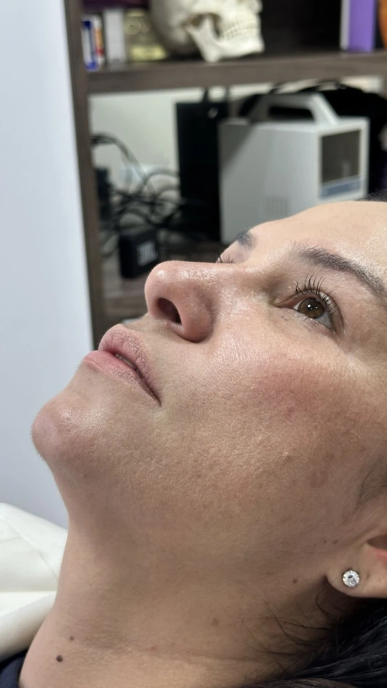
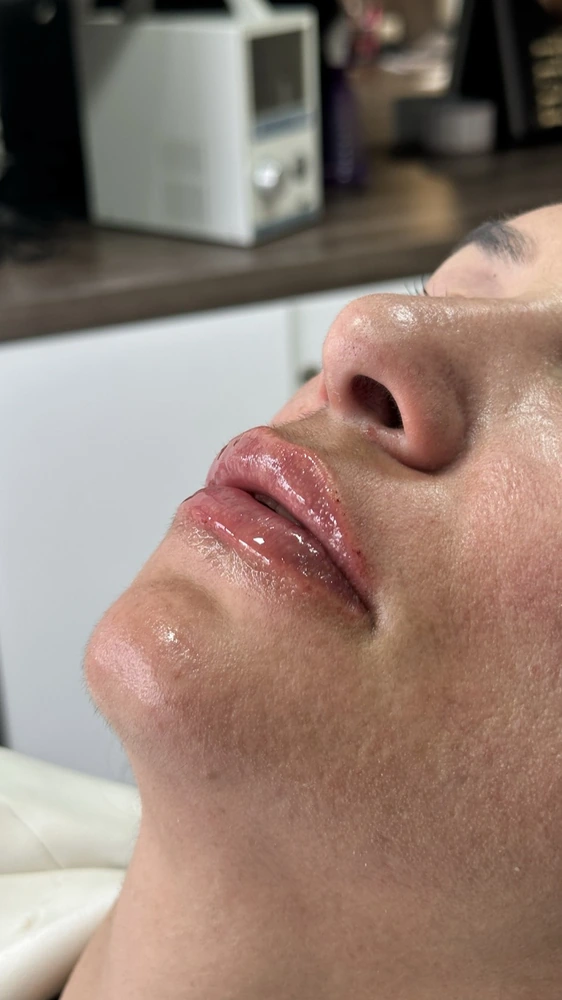
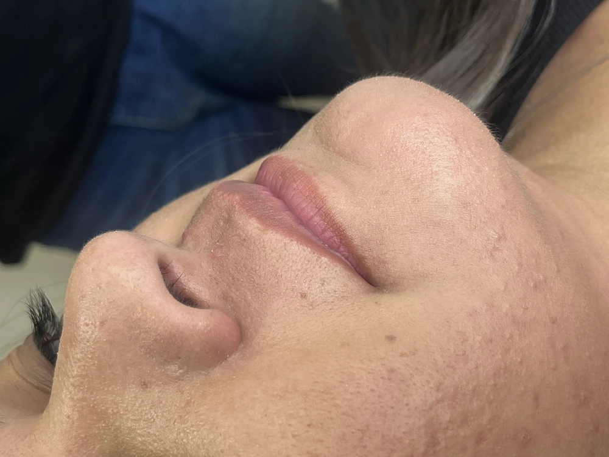
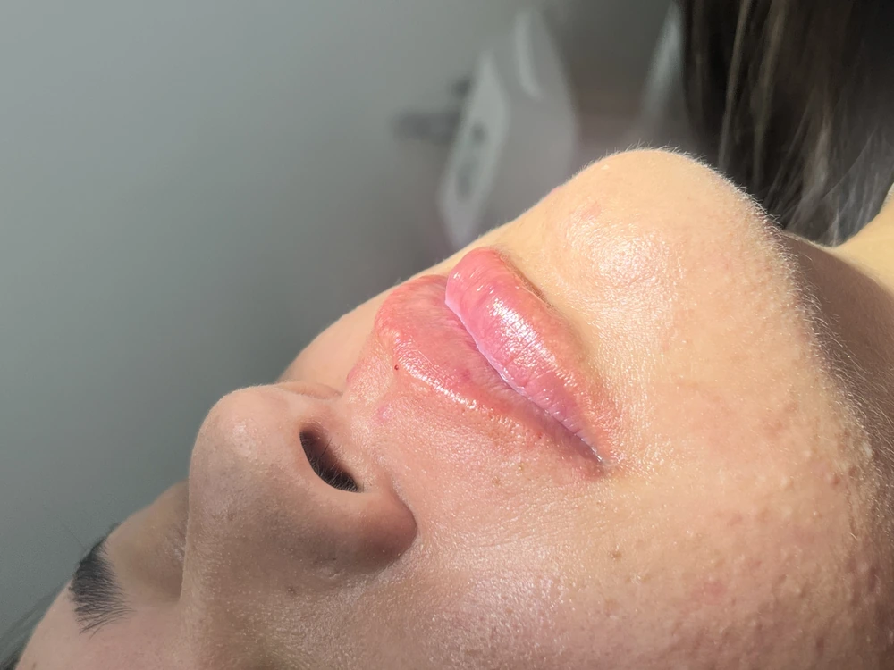
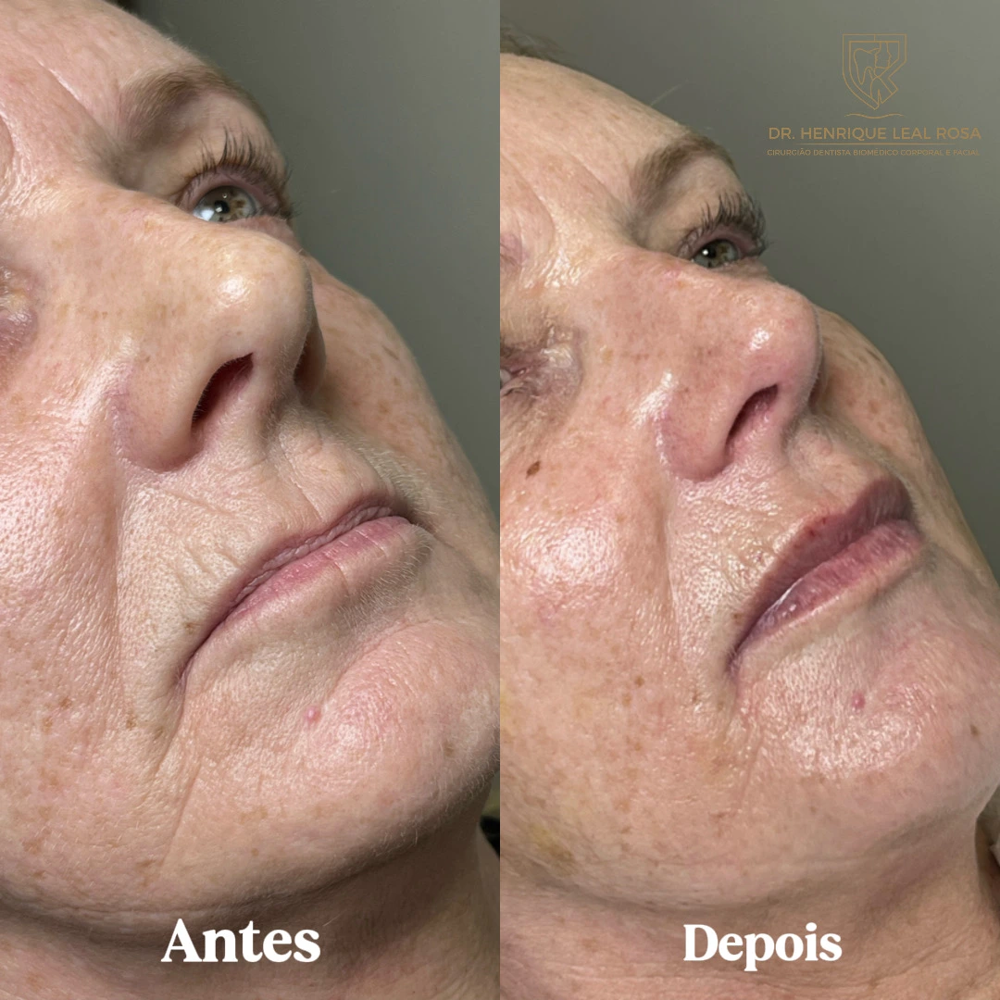

Lábios desenhados, hidratados e volumizados com perfeita proporção anatômica. Veja transformações reais realizadas pelo Dr. Henrique Leal Rosa no bairro Água Verde.

Antes
DepoisRealce do contorno labial e projeção suave do lábio superior com proporção áurea de 1:1.618 entre lábio superior e inferior.

Antes
DepoisSuavização de rugas periorais ("código de barras") e recuperação do viço labial com textura sedosa e natural ao toque.

Desenho simétrico do arco do cupido e eversão sutil para pacientes com lábio superior naturalmente retraído.
Técnica personalizada com anestesia odontológica sem dor e produtos biocompatíveis padrão ouro.